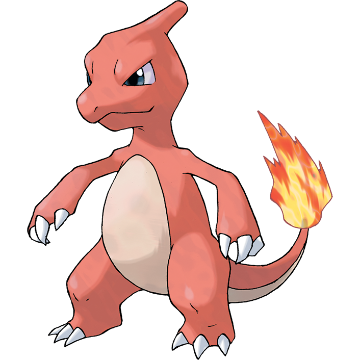
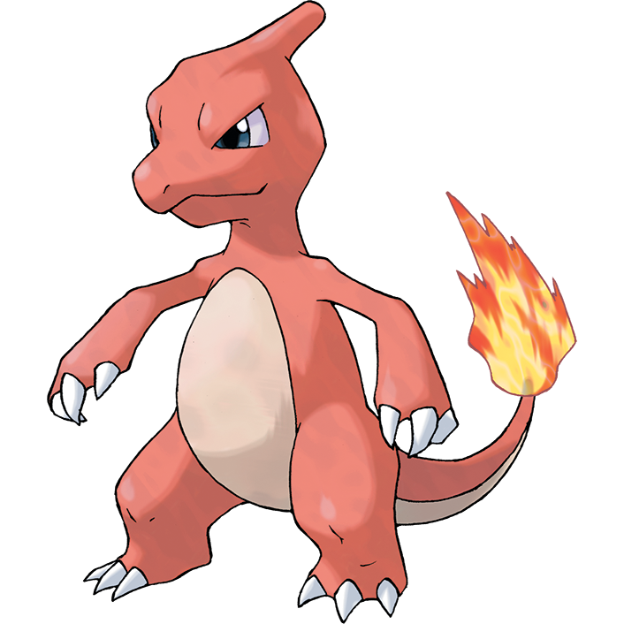
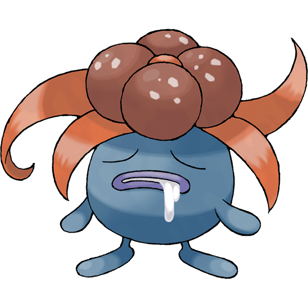
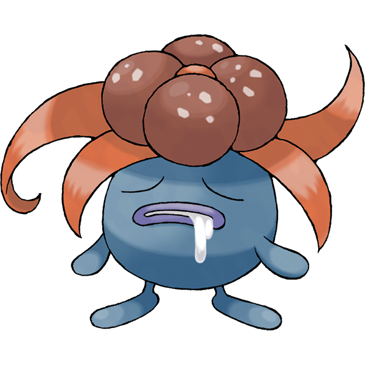
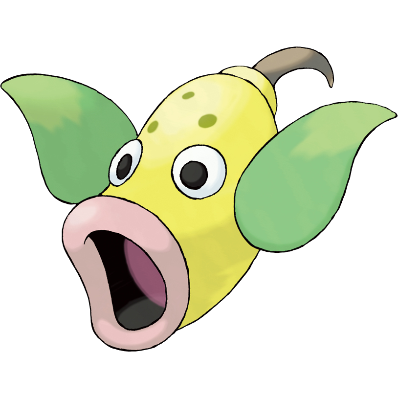
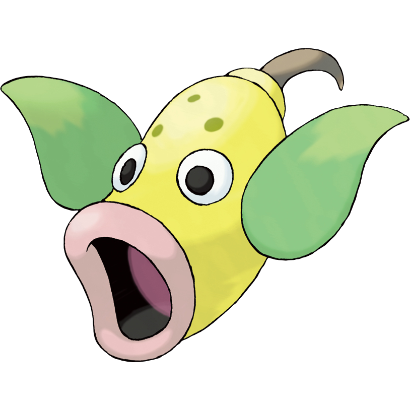
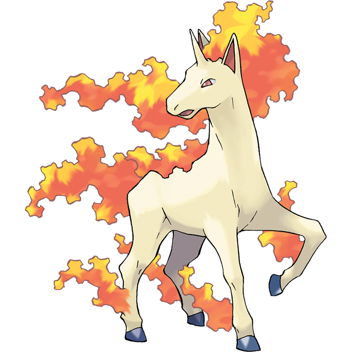
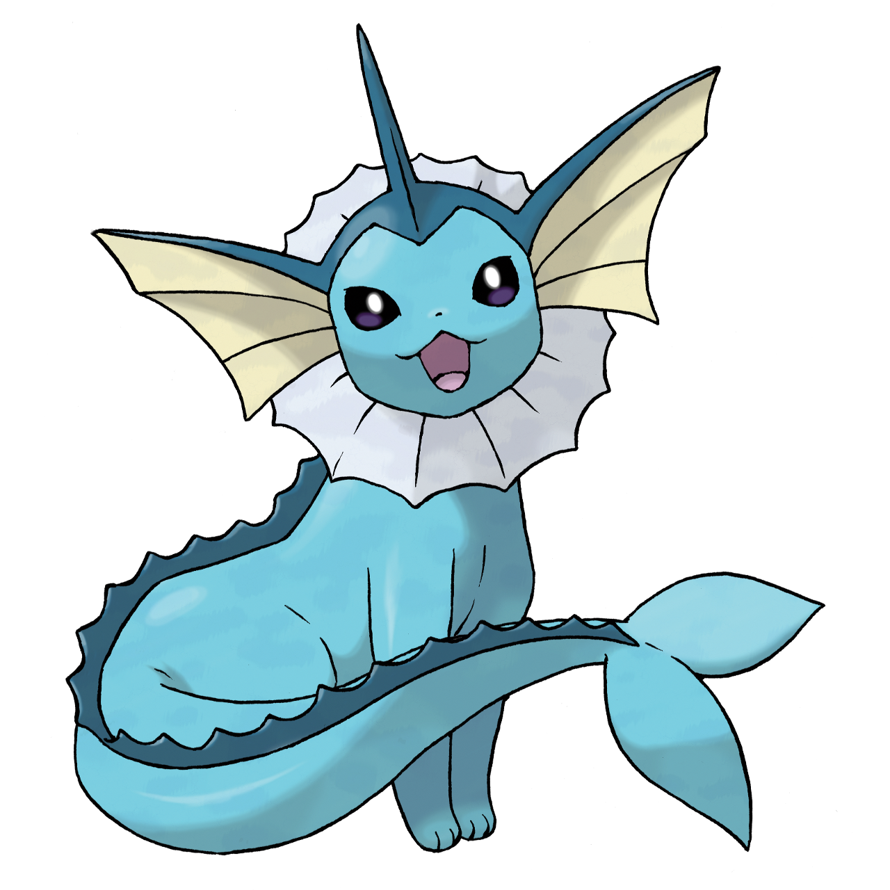
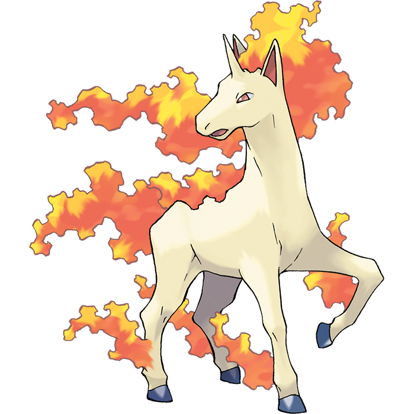
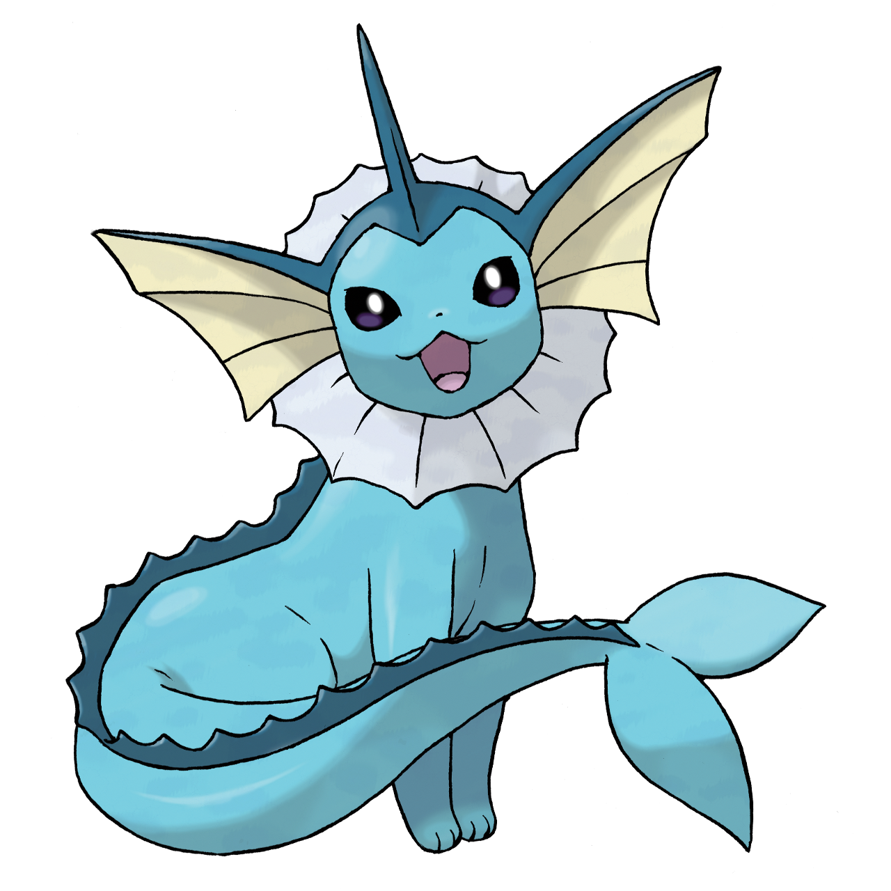

All About Zoroark
A rework of Zoroark's Bulbapedia and Pokémon Database pages
Zoroark (ゾロアーク) is a Dark-type Pokémon introduced in Generation V, which includes Pokémon Black, White, Black 2, and White 2. It is the second and final evolution of Zorua, evolving at level 30.
In Hisui, Zoroark has a dual-type Normal/Ghost regional form. This was introduced in Pokémon Legends: Arceus.
Zorua, Zoroark, and their Hisuian forms all share the signature ability of Illusion. When sent into battle, it will appear as the last pokémon in the player's party.
Along with Zorua, it was the first Generation V Pokémon to be revealed to the public on February 10, 2010, with Zoroark appearing as a silhouette. Their Hisuian forms were teased on October 19, 2021 in the form of a found-footage style video. This video was released in full two days later, and a final trailer was released the next week, showing official artwork and information.
Pokédex Number
- 571 (National)
- 077 (Black/White)
- 152 (Black 2/White 2)
- 125 (X/Y — Mountain Kalos)
- 029 (U.Sun/U.Moon — Alola and Melemele Island)
- 013 (U.Sun/U.Moon — Poni Island)
- 088 (The Isle of Armor)
- 220 (Legends: Arceus)
Zoroark and Zorua from Zoroark: Master of Illusions (aka M13)
Zoroark turning into Suicune with Illusion (M13)
Zoroark using Night Daze (M13)
Zoroark using Night Slash (M13)
Zoroark using Night Daze (Black 2/White 2)
Hisuian Zorua and Zoroark on your timeline? Must be an illusion... pic.twitter.com/7thsfI30cT
— Pokémon (@Pokemon) April 27, 2022
Zoroark - Trivia
Origin
Zoroark appears to be based on the kitsune of Japanese folklore, a shape-shifting mythical fox that would trick unsuspecting travelers for fun. Its facial markings may draw from Kabuki and Noh theater makeup. It also resembles a werewolf, due to the fact that it is an anthropomorphic canid, like most werewolves.
Hisuian Zoroark may draw inspiration from vengeful ghosts and revenants. Its coloration may be based on kitsune masks. The red portions on its arms and legs resemble frostbite sores.
"Zoroark" may be a combination of zorro (Spanish for fox) and dark, 悪 aku (evil), or arch- (prefix for "top" or "chief"). Its name stays consistent throughout languages.
Other Fun Facts
- No other Pokémon has the same type combination as Hisuian Zoroark and its pre-evolution Hisuian Zorua. Hisuian Zorua and Zoroark are also the only Pokémon immune to both of their types.
- Zoroark was first revealed by Junichi Masuda as a silhouette in the February 7, 2010 edition of Pokémon Sunday. Its full image was later revealed in the March 2010 issue of CoroCoro, alongside its pre-evolved form Zorua.
- Due to its debut before Generation V in Zoroark: Master of Illusions, it can be seen as a parallel to Lucario, which debuted in Lucario and the Mystery of Mew, prior to the release of Generation IV. Unlike Lucario, however, Zoroark was revealed at the same time as its pre-evolved form.
They both share the same names in Japanese and English versions of the game, have the same Gender ratio, are in the Field Egg Group and need 1,059,860 Exp. to reach level 100. - Though evolving from Zorua at level 30, pre-release information from CoroCoro suggested it would evolve from Zorua by a method different from known evolution methods. What this method might have been if it was true is unknown.
- Zoroark and its pre-evolution Zorua are the only non-Mythical Pokémon to have been event-exclusive for a time, prior to the release of Pokémon Black 2 and White 2.
- Zoroark appears in Pokémon Battle Chess BW Version. Along with Emboar, Zoroark doesn't behave similarly to any traditional piece in chess.
Zoroark and Zorua were designed by Atsuko Nishida, who has designed many other popular pokémon:

 



 leedle leedle leedle")


 

 

")
 





Bulbasaur
Charmander
Charmeleon
Charizard
Mega Charizard X
Squirtle
Wartortle
Weedle
Kakuna
Beedrill
Pikachu
Raichu
Alolan Raichu
Vulpix
Ninetales
Oddish
Gloom
Vileplume
Bellsprout
Weepinbell
Victreebel
Ponyta
Rapidash
Vaporeon
Dratini
Dragonair
Espeon
Umbreon
Kricketot
Kricketune
Leafeon
Glaceon
Munna
Musharna
Cottonee
Whimsicott
Petilil
Lilligant
Minccino
Cinccino
Karrablast
Sylveon
Zorua
Hisuian Zorua
Zoroark
Hisuian Zoroark
Unovan Zoroark Biology
The Illusion Fox Pokémon
Zoroark is a bipedal, slate gray, fox-like Pokémon with crimson and black accents. It has a pointed snout and ears with red insides. It also has some red rimming its eyes and mouth. Zoroark has a large, red, voluminous mane with black tips, tied into a ponytail, as a teal bangle down its length separates a mass of the mane from the lower portion. It has a black ruff on its upper body, pointed at the shoulders from which its arms extend. Its upper arms are thin, whereas its lower arms, while still slim, are bulkier. The arms have spiky extensions of fur at the elbows, and it has red claws on its hands and feet. Zoroark's eyes are red-rimmed with light blue irises.
In its shiny form, all red accents turn to purple, while the black gains a reddish tint. The bangle and irises turn yellow.
Zoroark can create illusions that are indistinguishable from reality, deluding many people simultaneously. It can even create illusory landscapes in the forests where it dwells, to hide its territory and protect its den. However, Zoroark is incapable of physically changing itself into another form; it is merely capable of casting illusions. When a Zoroark takes the form of a human, it is capable of human speech. It can make convincing illusions of attacks, and these illusions are extremely realistic, enough to fool even cameras and make one believe they're being physically affected, though the illusion does not have any direct physical effect. Lonely Trainers tend to use Zoroark to create illusions in order to ease their own burden of solitude.
Zoroark lives in groups, where unity is strong. It is extremely protective of those it cares about and will go to any lengths to keep them safe, including risking its own life, and it can hold grudges on those who harm its loved ones. Zoroark will hide its Zorua young in its mane to protect them and carry them around. There are stories that say Zoroark punishes those who attempt to catch it by trapping them in an illusion. Night Daze is its former signature move.
Hisuian Zoroark Biology
The Baneful Fox Pokémon
In the Hisui region, Zoroark takes on a drastic ghostly appearance due to dying from the harsh conditions and being reborn through spite. Its main body color is now disheveled with light gray with red and white accents. Hisuian Zoroark's head and face are similar to its Unova counterpart but colored gray. It has gray ears with black insides and two white markings on both sides of the face. The ears also have light red split parts. The long mane has changed into a longer mane that is colored white with the ends of each tips being colored light and dark red, while covering the right side of Zoroark's face. The arms and legs have several red spots and light red fur that dangles around. The claws and toes of Zoroark are colored black. The eyes are now red with yellow sclera.
In its shiny form, all red accents are turned purple.
As a result of its apearance, Hisuian Zoroark was said to resemble an embodiment of death. The illusions channeled through Hisuian Zoroark's long withering fur are full of spite. Uniquely, this spiteful illusion can cause physical harm to its opponent on both the inside and outside. This power comes from the hatred it has for every living thing in the world. Hisuian Zoroark's illusion malice is powerful enough to drive anyone who sees it to insanity due to their terror. Hisuian Zoroark recklessly attacks its foes or nemeses, to the point its own bitter energy can cause physical harm onto itself. Despite its extremely hostile and aggressive nature to everything, Hisuian Zoroark can be compassionate to those it cares about, however, such as Hisuian Zorua, and it will become an invaluable ally once someone earns its trust. Hisuian Zoroark prefers to reside in the cold areas where it lingers onto. Like its Unova counterpart, Hisuian Zoroark can make its illusion of humans talking, to the point of easily fooling anyone in order to get food.
Hisuian Zoroark and Zorua are the only known Pokémon capable of learning the move Bitter Malice.
Unovan Zoroark Stats
| Type | Height | Weight | Color |
|---|---|---|---|
| Dark | 5'03" — 1.6m | 178.8 lbs — 81.1 kg | Gray |
| Ability | Gender ratio | Egg Group | Base Friendship |
| Illusion | 87.5% M, 12.5% F | Field | 70 |
| Catch Rate | Base EXP Yield | Level Rate | EV Yield |
| 45 (11.9%) | 179 | Medium Slow | 2 Sp. Atk. |
| Game(s) | Entry |
|---|---|
| Black, Y, Alpha Sapphire | Bonds between these Pokémon are very strong. It protects the safety of its pack by tricking its opponents. |
| White, X, Omega Ruby | Each has the ability to fool a large group of people simultaneously. They protect their lair with illusory scenery. |
| Black 2, White 2 | Stories say those who tried to catch Zoroark were trapped in an illusion and punished. |
| Ultra Sun | It doesn't just transform itself—it also has the power to make hundreds of people see its illusions. |
| Ultra Moon | If it thinks humans are going to discover its den, Zoroark shows them visions that make them wander around in the woods. |
| Sword | This Pokémon cares deeply about others of its kind, and it will conjure terrifying illusions to keep its den and pack safe. |
| Shield | Seeking to ease the burden of solitude, lonely Trainers tell Zoroark to show illusions to them. |
| Damaged normally by: | Normal Poison Ground Rock Steel Fire Water Grass Electric Ice Dragon |
| Weak to: | Fighting Bug Fairy |
| Immune to: | Psychic |
| Resistant to: | Ghost Dark |
| HP: 60 | |
| Attack: 105 | |
| Defense: 60 | |
| Sp. Attack: 120 | |
| Sp. Defense: 60 | |
| Speed: 105 | |
| Total: 510 | |
Hisuian Zoroark Stats
| Types | Height | Weight | Color |
|---|---|---|---|
| Ghost/Normal | 5'03" — 1.6m | 160.9 lbs — 73.0 kg | White |
| Ability | Gender ratio | Egg Group | Base Friendship |
| Illusion | 87.5% M, 12.5% F | Field | 70 |
| Catch Rate | Base EXP Yield | Level Rate | EV Yield |
| 45 (11.9%) | 179 | Medium Slow | 2 Sp. Atk. |
| Game | Entry |
|---|---|
| Legends: Arceus | With its disheveled white fur, it looks like an embodiment of death. Heedless of its own safety, Zoroark attacks its nemeses with a bitter energy so intense, it lacerates Zoroark's own body. |
| Damaged normally by: | Ground Rock Steel Fire Water Grass Electric Ice Dragon Psychic Fairy |
| Weak to: | Dark |
| Immune to: | Normal Fighting Ghost |
| Resistant to: | Poison Bug |
| HP: 55 | |
| Attack: 100 | |
| Defense: 60 | |
| Sp. Attack: 125 | |
| Sp. Defense: 60 | |
| Speed: 110 | |
| Total: 510 | |
Unovan Zoroark Locations
This includes all main-series games that Zoroark can be in.
Lostlorn Forest (requires Shiny fateful encounter Raikou, Entei, or Suicune)
Evolve Zorua (requires fateful encounter Celebi)
Evolve N's Zorua (Received from Rood in Driftveil City)
Route 20 (5% encounter in red flowers)
Pokémon Village (10% encounter in yellow and purple flowers)
Evolve Zorua (Route 101, hidden pokémon after defeating or capturing Groudon/Kyogre)
Trade
Evolve Zorua (30% encounter at Trainer's School)
Poni Grove (20% encounter)
Trade (Version 1.2.0+)
Evolve Zorua:
- 15% random encounter (Forest of Focus, fog)
- 10% visible encounter (Forest of Focus, fog)
- Forest of Focus wanderer (Fog, southeast of the Berry tree near the Soothing Wetlands border)
- Fields of Honor wanderer (Cloudy & fog, east of the Armor Station, near a Berry tree)
- Soothing Wetlands wanderer (Cloudy & fog, in an open area just south of the Forest of Focus border)
In the wild:
- Loop Lagoon wanderer (Cloudy & fog, east of the arch on the central island, south of the den)
- Insular Sea wanderer (Cloudy, roaming the big island)
Hisuian Zoroark Locations
According to the initial trailer for Pokémon Scarlet and Violet, Hisuian Zoroark will be available. However, currently, its only available game is Pokémon Legends: Arceus.
Evolve Zorua (Found in the ice caverns of Bonechill Wastes in the Alabaster Icelands)
Bonechill Wastes (Alabaster Icelands, rare spawn in the ice caverns)
Lake Acuity Cavern (Alpha, only one)
Unovan Zoroark Moveset
This is only its Generation VIII moveset - because otherwise the number of tables I'd have to write would make me start crying.
| Level | Move | Category | Power |
|---|---|---|---|
| 1/Evo. | Night Slash | Physical | 70 |
| 1 | U-turn | Physical | 70 |
| 1 | Scratch | Physical | 40 |
| 1 | Leer | Status | — |
| 1 | Torment | Status | — |
| 1 | Hone Claws | Status | — |
| 12 | Fury Swipes | Physical | 18 |
| 16 | Scary Face | Status | — |
| 20 | Taunt | Status | — |
| 24 | Knock Off | Physical | 65 |
| 28 | Fake Tears | Stats | — |
| 34 | Agility | Status | — |
| 40 | Imprison | Status | — |
| 46 | Night Daze | Special | 85 |
| 52 | Nasty Plot | Status | — |
| 58 | Foul Play | Physical | 95 |
| TM | Move | Category | Power |
|---|---|---|---|
| TM00 | Mega Punch | Physical | 80 |
| TM01 | Mega Kick | Physical | 120 |
| TM08 | Hyper Beam | Special | 150 |
| TM09 | Giga Impact | Physical | 150 |
| TM15 | Dig | Physical | 80 |
| TM21 | Rest | Status | — |
| TM23 | Thief | Physical | 60 |
| TM24 | Snore | Special | 50 |
| TM25 | Protect | Status | — |
| TM26 | Scary Face | Status | — |
| TM31 | Attract | Status | — |
| TM33 | Rain Dance | Status | — |
| TM34 | Sunny Day | Status | — |
| TM39 | Facade | Physical | 70 |
| TM40 | Swift | Special | 60 |
| TM42 | Revenge | Physical | 60 |
| TM44 | Imprison | Status | — |
| TM47 | Fake Tears | Status | — |
| TM52 | Bounce | Physical | 85 |
| TM56 | U-turn | Physical | 70 |
| TM57 | Payback | Physical | 50 |
| TM58 | Assurance | Physical | 60 |
| TM59 | Fling | Physical | — |
| TM65 | Shadow Claw | Physical | 70 |
| TM75 | Low Sweep | Physical | 65 |
| TM76 | Round | Special | 60 |
| TM77 | Hex | Special | 65 |
| TM79 | Retaliate | Physical | 70 |
| TM85 | Snarl | Special | 55 |
| TR00 | Swords Dance | Status | — |
| TR02 | Flamethrower | Special | 90 |
| TR07 | Low Kick | Physical | — |
| TR12 | Agility | Status | — |
| TR20 | Substitute | Status | — |
| TR22 | Sludge Bomb | Special | 90 |
| TR26 | Endure | Status | — |
| TR27 | Sleep Talk | Status | — |
| TR30 | Encore | Status | — |
| TR33 | Shadow Ball | Special | 80 |
| TR35 | Uproar | Special | 90 |
| TR37 | Taunt | Status | — |
| TR38 | Trick | Status | — |
| TR42 | Hyper Voice | Special | 90 |
| TR49 | Calm Mind | Status | — |
| TR58 | Dark Pulse | Special | 80 |
| TR64 | Focus Blast | Special | 120 |
| TR68 | Nasty Plot | Status | — |
| TR77 | Grass Knot | Special | — |
| TR81 | Foul Play | Physical | 95 |
| TR95 | Throat Chop | Physical | 80 |
| Parent | Move | Category | Power |
|---|---|---|---|
| Eevee line, Lucario, Wooloo line | Copycat | Status | — |
| Galarian Zigzagoon line, Lucario, Midnight/Dusk Lycanroc,
Mudbray line, Scorbunny line, Skwovet line |
Counter | Physical | — |
| Galarian Farfetch'd line, Torchic line, Absol,
Lucario, Mienfoo line |
Detect | Status | — |
| Vulpix line (both forms), Nuzleaf, Shiftry | Extrasensory | Special | 80 |
| Stunky line | Memento | Status | — |
| Diglett line (both forms), Seedot line, Mawile,
Absol, Stunky line, Purrloin line, Male Meowstic, Midday/Dusk Lycanroc, Sobble line, Nickit line |
Sucker Punch | Physical | 70 |
These are from the Isle of Armor Move Tutor.
| Move | Category | Power |
|---|---|---|
| Burning Jealousy | Special | 70 |
| Lash Out | Physical | 75 |
| Skitter Smack | Physical | 70 |
| Gen | Move | Category | Power | Usable |
|---|---|---|---|---|
| V, VI, VII | Aerial Ace | Physical | 60 | Yes |
| V, VI, VII | Captivate | Status | — | No |
| VI, VII | Confide | Status | — | Yes |
| V, VI, VII | Covet | Physical | 60 | Yes |
| V, VI | Cut | Physical | 50 | Yes |
| V, VI, VII | Double Team | Status | — | Yes |
| V, VI, VII | Embargo | Status | — | No |
| V, VI, VII | Feint Attack | Physical | 60 | No |
| V, VI, VII | Frustration | Physical | — | No |
| V, VI, VII | Hidden Power | Special | 60 | No |
| V, VI | Incinerate | Special | 60 | Yes |
| VII | Laser Focus | Status | — | Yes |
| V, VI, VII | Psych Up | Status | — | Yes |
| V, VI, VII | Punishment | Physical | — | No |
| V, VI, VII | Pursuit | Physical | 40 | No |
| V, VI, VII | Return | Physical | — | No |
| V, VI, VII | Roar | Status | — | Yes |
| V, VI | Rock Smash | Physical | 40 | Yes |
| VI | Secret Power | Physical | 70 | No |
| V, VI, VII | Snatch | Status | — | No |
| V, VI, VII | Spite | Status | — | Yes |
| V, VI, VII | Swagger | Status | — | Yes |
| V, VI, VII | Toxic | Status | — | Yes |
Hisuian Zoroark Moveset
| Level | Mastery | Move | Category | Power |
|---|---|---|---|---|
| 1 | 10 | Shadow Sneak | Physical | 40 |
| 6 | 15 | Snarl | Special | 60 |
| 11 | 20 | Swift | Special | 60 |
| 18 | 28 | Bitter Malice | Special | 60 |
| 25 | 35 | Slash | Physical | 70 |
| 34 | 45 | Shadow Claw | Physical | 70 |
| 40 | 51 | Shadow Ball | Special | 80 |
| 43 | 54 | Nasty Plot | Status | — |
| 52 | 64 | Extrasensory | Special | 70 |
| Move | Category | Power |
|---|---|---|
| Rock Smash | Physical | 40 |
| Aerial Ace | Physical | 60 |
| Swift | Special | 60 |
| Ominous Wind | Special | 60 |
| Calm Mind | Status | — |
| Rest | Status | — |
| Shadow Claw | Physical | 70 |
| Sludge Bomb | Special | 80 |
| Shadow Ball | Special | 80 |
| Snarl | Special | 60 |
| Giga Impact | Physical | 120 |
| Hyper Beam | Special | 120 |
| Flamethrower | Special | 80 |
| Dark Pulse | Special | 80 |